As a designer I'm interested in where I fit in the world. I've found that STEAM, which is adding Art to Science Technology Engineering and Math, is a helpful way to envision how artists and designers could occupy our cultural imagination. This year I'm the president of RISD's STEAM student group.
I started by creating an identity for STEAM at RISD and beyond. I wanted something that could be drawn by hand and by people who might not have access or experience with Adobe software. I used a pentagon to represent the five initials of STEAM:
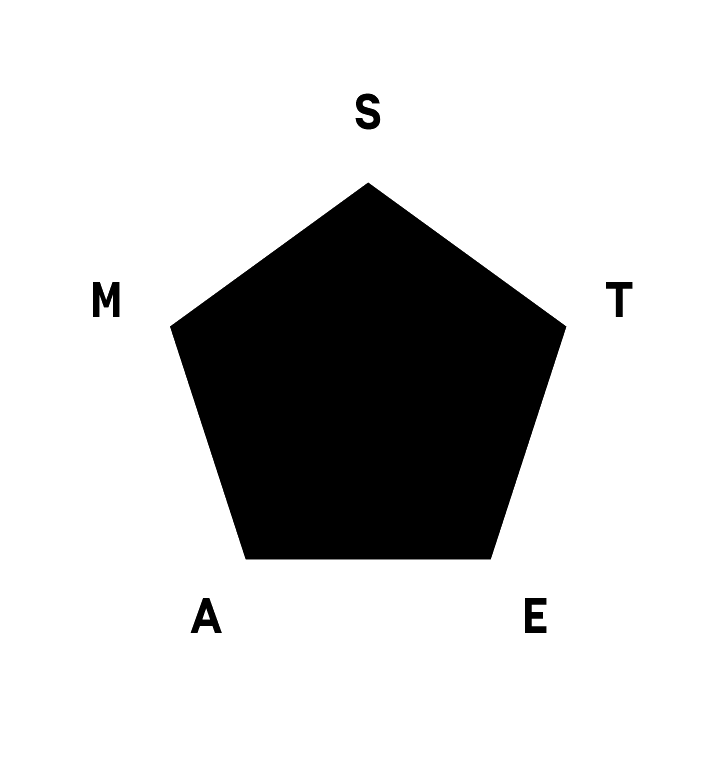But I needed something customizable to a growing group of schools and, again, easy to replicate.
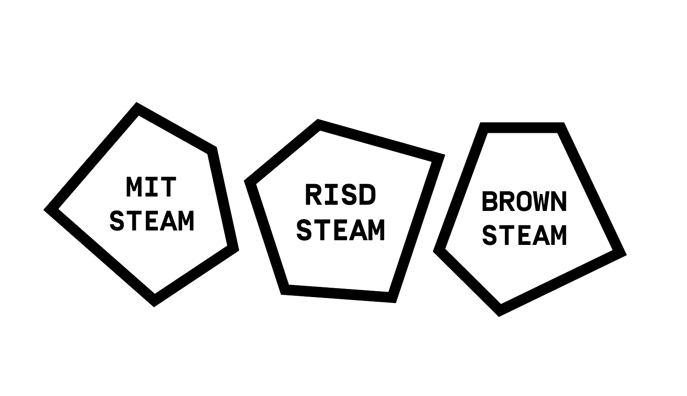With a low-key identity established, I made a website with the help of Lukas WinklerPrins and Ryan Flomerfelt Mather. 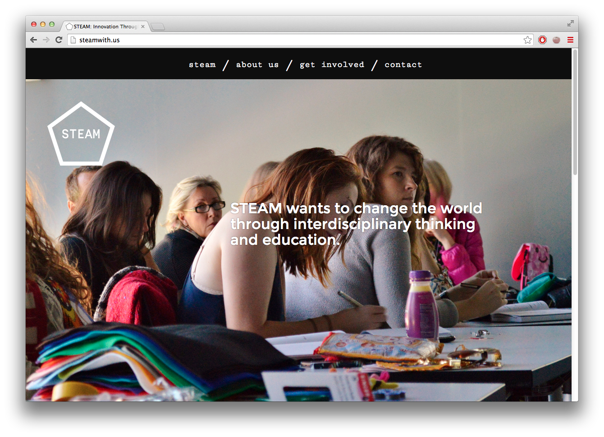
From there I've made a variety of print and digital projects for the STEAM group, and hopefully helped facilitate others to make graphic work around STEAM too.
I made a zine about our group to distribute at the New York Art Book Fair.
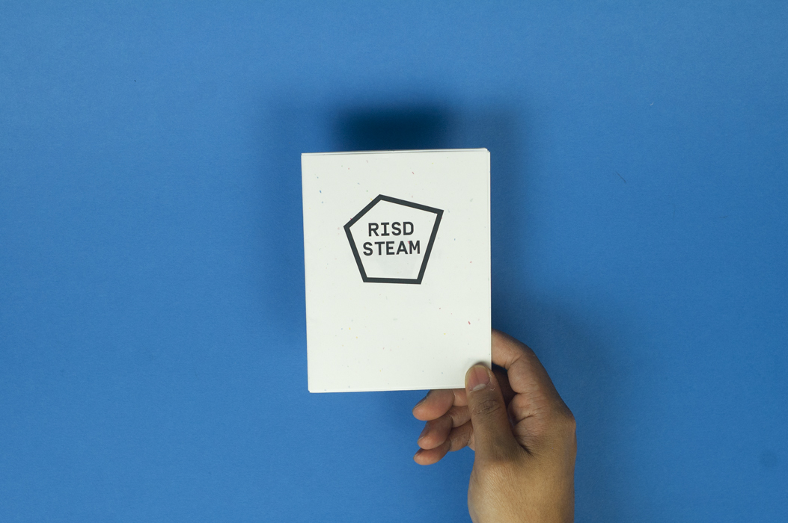 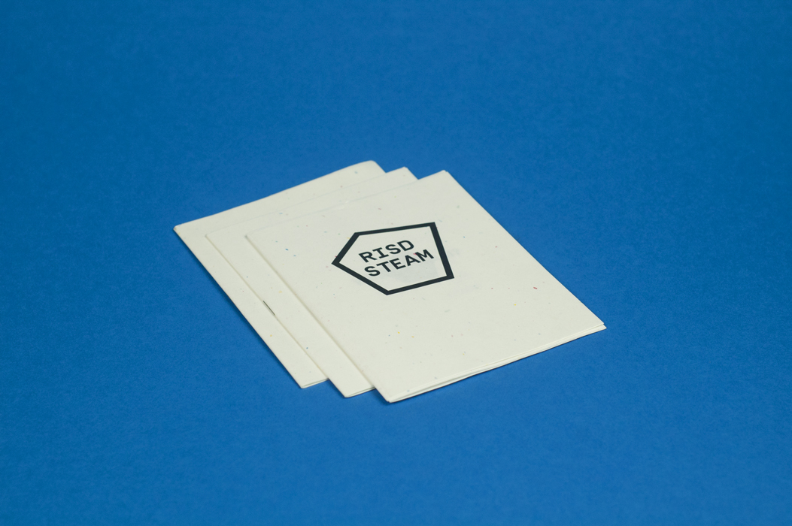 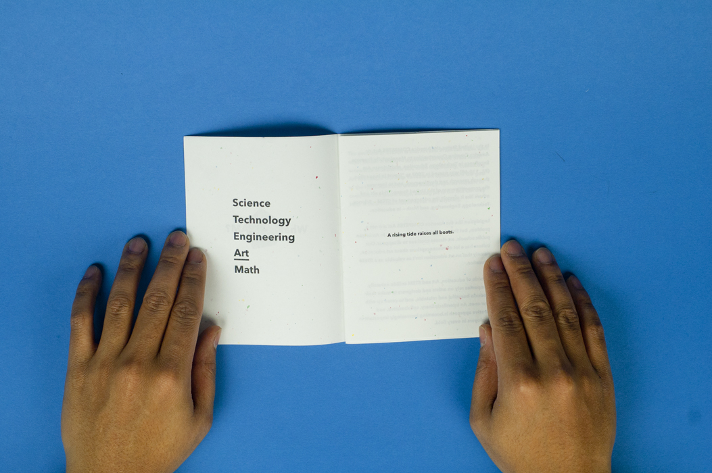Posters for events held on campus, notably Human + Computer, a workshop series we facilitated this winter.

 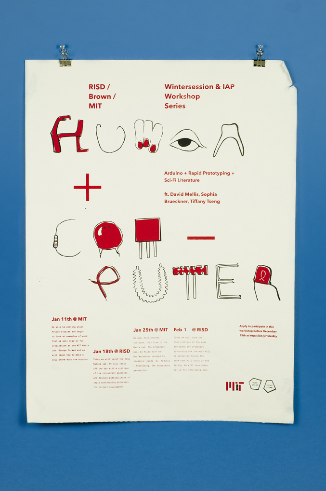
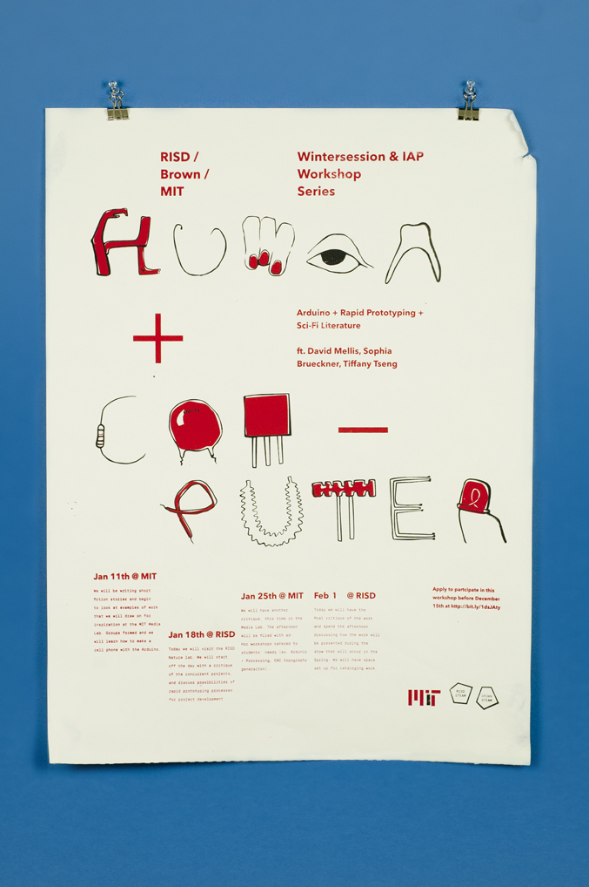
To document what we do and share it with others, I started catalogue to be published quarterly. If you'd like a copy, let me know.
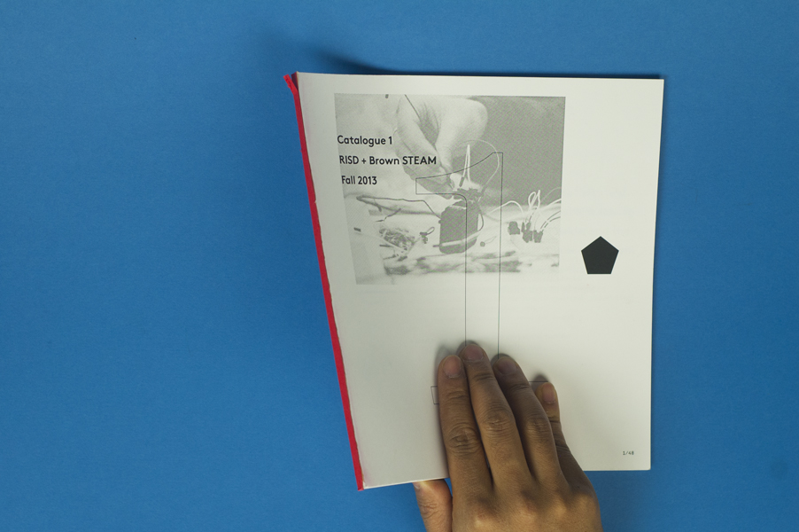 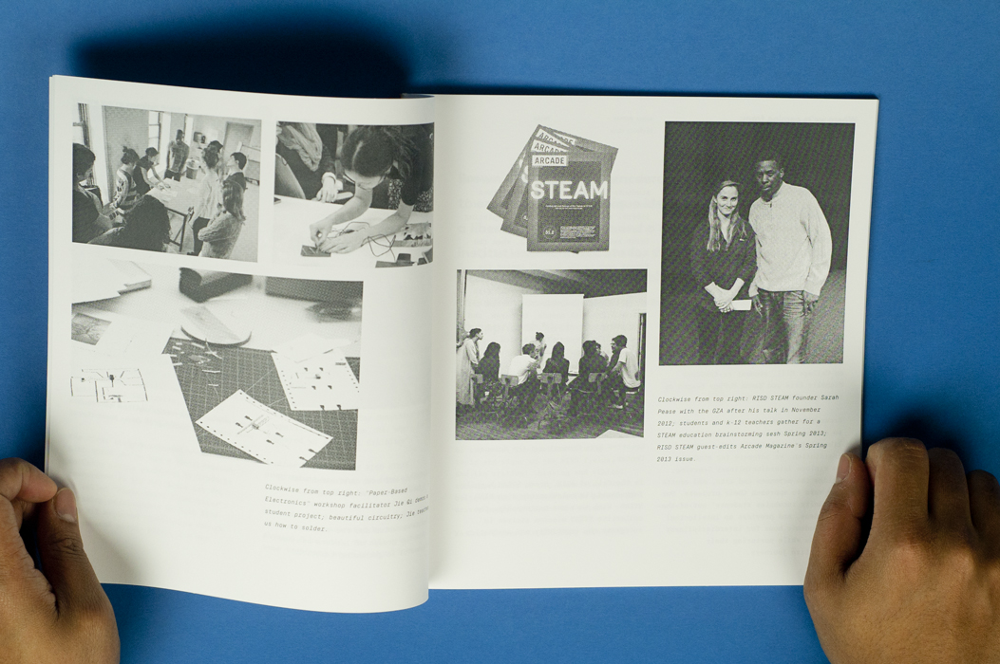 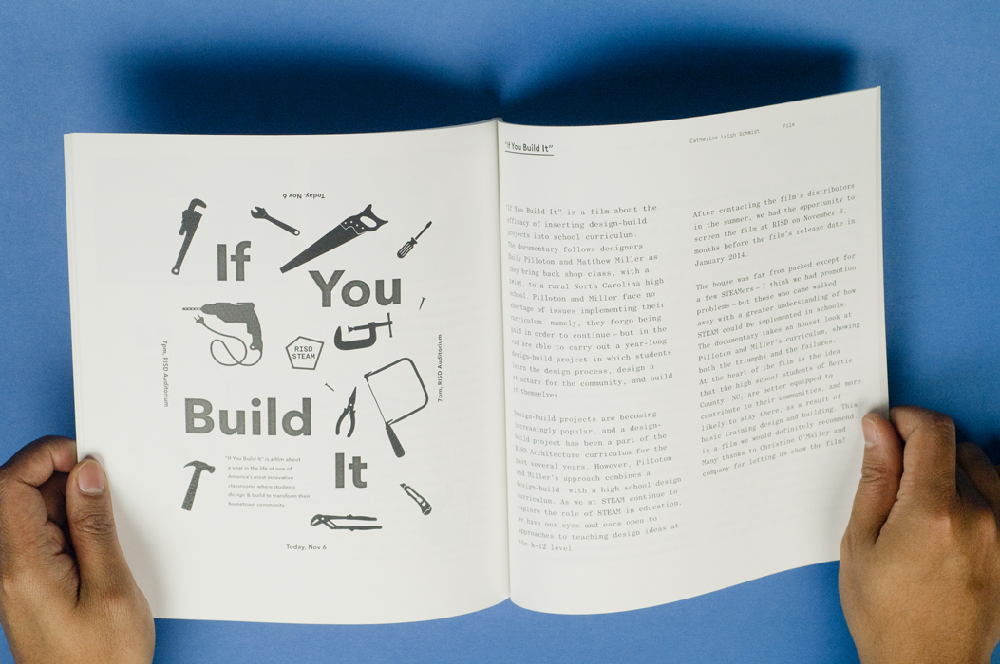 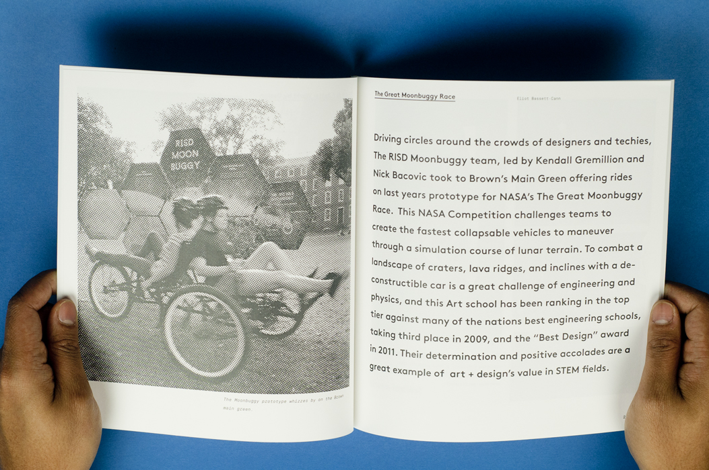 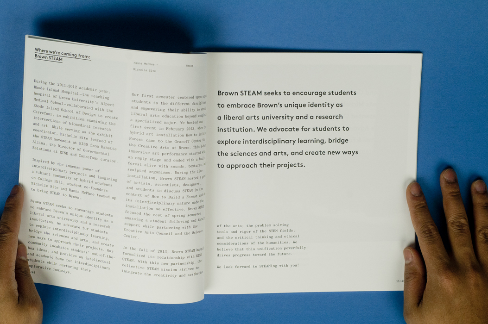If you'd like to learn more about what we do or start a STEAM group of your own, please visit steamwith.us.